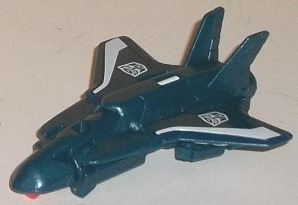
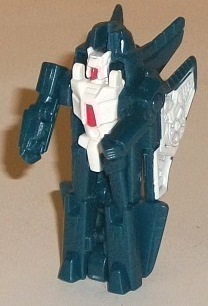
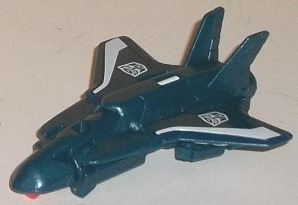
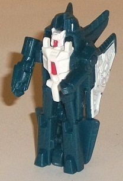
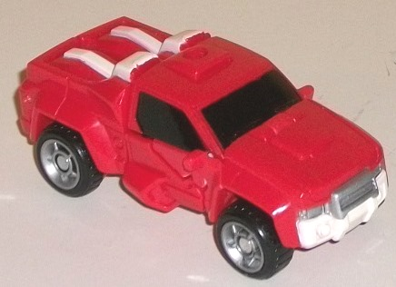
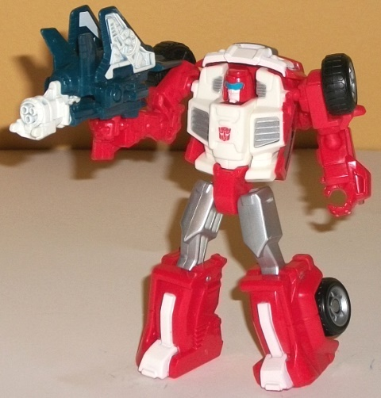

 
Difficulty of Transformations : Very Easy
Color Scheme : Dark glittery greenish blue, white, and some red
Individual Rating : 5.9
Allegiances:
Autobot
Size
: Legends 2-pack
 Flanker
Flanker


Difficulty of Transformations
: Very
Easy
Color Scheme
: Dark glittery greenish
blue, white, and some red
Individual Rating
: 5.9
Flanker's alternate mode
is a drone-like jet (no cockpit is either molded or painted onto the toy--
plus, it's just a more appropriate alt mode for a toy that's this tiny
in size). In case you're blanking on what Flanker is homaging, apparently
he was meant to be an updated version of the G1 Micromaster Sky High, but
had his name completely changed due to copyright reasons. Anyways, this
mode looks pretty decent, esepcially for the size. The robot arms can be
seen poking out a little from behind the backside of the wings, but really
those are the only robot mode extras here-- yes, if you flip over the toy
Flanker's entire robot mode is on the underside, but you're not supposed
to do that and it doesn't give the jet mode a huge underbelly or anything,
sooo... don't flip it over. The dark greenish blue that's used as Flanker's
main plastic color is a fairly nice shade, with the hint of green really
working in this color scheme's favor. In this mode Flanker's color scheme
is kept pretty simple, with only a few white stripes and Autobot symbols
on the wings as far as paint apps go. It still works decently enough on
such a small toy, though, and having little mold detailing on the front
end with some more intricate detailing on the back end of this mode keeps
it sleek-looking while still keeping it from looking too simplistic, either.
Getting Flanker into
weapon mode (see the pics of Swerve below) involves taking most of his
robot body and moving it all forwards on a hinge while you flip his wings
up and a handle peg down. The result is actually a pretty darned solid
weapon mode, particularly when compared to most other weapon modes for
these smaller figures in the Generations Legends 2-packs. The well-detailed
gunbarrel and fairly long length make it a quite convincing blaster with
some wings on the side. The robot arms are also quite obvious in this mode
too, though since they're surrounded by the same dark blue-green color
of plastic they don't stick out as much as you think they would. The color
scheme is more varied here, with white paint much more prevalent along
with a few bits of red (on the handle and the underside of the gunbarrel
in this mode). The handle, as you would expect, is a 5mm peg that can be
held by compatible Generations figures, and it's far enough back on the
gun where even most Legends figures can hold Flanker while still keeping
their arms bent at the elbow-- always appreciated.
Flanker's robot mode
mostly just consists of flipping his jet mode up on its front end, though
you also flip the wings back. It's not a ingenious transformation by any
means, but it gets the job done for such a small size. More white and red
paint shows up in this mode too, and he's got some intricate mold detailing,
like the fans on his wings. The details on his robot chest and head line
up pretty well with G1 Sky High's, and are nicely done. Because of his
teeny tiny size, he can't move much-- only back-and-forth at the shoulders--
but honestly, you really shouldn't expect much more than that from a tiny
triple changer.
Flanker isn't a perfect
figure by any means-- I mean, his robot mode's a brick, and his arms are
quite obvious in both of his alt modes-- but, if you temper your expectations
given the teeny size, he's actually a pretty nice shot at a triple changer
in this size class. All three of his modes are at minimum serviceable (robot),
and at best quite good (weapon, jet) for the size. In fact, out of all
the tinier Legends figures in these "Thrilling 30" Legends 2-packs, this
mold is my favorite among them.
 Swerve
Swerve


Difficulty of Transformation
: Very
Easy
Color Scheme
: Red, white, black,
and some silver and moderately light blue
Individual Rating
: 8.4
Out of many toys Swerve
has gotten over the years, this is the very FIRST of them all that actually
isn't a remold or redeco, but a completely new mold! It says something
about the emerging popularity of the character-- given his comedic-relief
persona in the comic series
More Than Meets The Eye
-- that Swerve
gets his release before Gears for the first time ever. Anyways, Swerve's
alt mode is a 4WD truck, looking a bit less compact than his G1 toy and
more like a "normal" truck. Proportionally, he's quite good-- the only
real issues here are his feet, which are very obviously sticking up out
of the top of his truck bed. They're even painted white to make them stick
out even more-- granted, this makes him more accurate to his comic appearance
in robot mode, but in vehicle mode it's just pretty darned hard to overlook
those feet. On a lesser note, if you look at Swerve from the back end,
there's some definite gaps there because that's where the knees fold out
during transformation. Swerve's mold detailing is relatively sparse in
this mode-- I feel he should've had a little more detailing, at least on
the sides-- but what is detailed is quite well-done, such as his front
grill and wheels. His paint apps also are spread out fairly well over this
mode, so that his predominant color of red isn't TOO predominant-- his
windows are painted a nice shade of black, his wheel spokes and upper front
bumper are silver, and his feet details and lower front bumper are white.
(Unfortunately, his rear end isn't painted at all, but given how gappy
it is, I tend not to look at this mode from a rear angle anyways.) This
all contributes to a rather basic "Autobot-y" color scheme of red, white,
and black with a bit of silver. It's not original or particularly eye-catching,
but they ARE Swerve's colors, and the colors of course work together decently
enough, so I have no issues in regards to his color scheme. Swerve has
a 5mm port on the top of this mode to hold his partner Flanker or any other
compatible weapon/Transformer.
Swerve's transformation
to robot mode is very simple, even for a Legends figure-- all you do is
fold out his legs from the back end, separate his arms from the sides,
and then collapse his front hood onto his back, and you're done. In robot
mode, Swerve oozes personality-- his short, squat stature fits right in
with his happy-go-lucky personality in the IDW comics' universe, so unlike
with most TFs, I'm not going to take off for his head essentially coming
right out of the upper center of his chest, with his shoulders just as
high as said head-- it's sort of his thing, and isn't awkward to the point
of being ugly. His legs are pretty much perfect proportionally, and his
arms are pretty close-- however, due to the transformation, they end up
being slightly less bulky and slightly shorter than they should be, along
with having a few odd chunks of his vehicle mode on the back of them, like
fragments of the truck doors and side mirrors. The mold detailing-- while
still a bit sparse-- is appropriately cartoony for the character, and the
smirk on his excellently-sculpted head just fits Swerve perfectly. The
color breakup is also more interesting in this mode, with black being less
of a factor in favor of more white on his main body and silver on his chest
vents and upper legs. He could use a bit of paint on his arms, but otherwise
he looks pretty good in this mode in that respect. For articulation, Swerve
can move at the shoulders, elbows, hips, knees, a bit forward at the waist
(due to his transformation), and forward-and-back at the head (no side-to-side
articulation, unfortunately). His hips and arm joints are all ball joints
as well, so given that his main body's a big blocky stump, he's more poseable
than you'd think. His 5mm port from vehicle mode is now in the middle of
his back, giving him a weapon storage point if you don't want him to hold
a weapon in his hands.
Swerve may not be particularly
awe-inspring in terms of his engineering or color scheme, but he's a toy
with a lot of personality, both in his robot mode proportions and headsculpt.
Some minor arm kibble in robot mode and obvious leg details and gappy back
in vehicle mode are his only real downsides, and in general he's just a
fun, simple, characterful toy.
The Swerve/Flanker set is one of the best Generations "30th Anniversary" 2-packs out there. Neither are perfect, but Flanker strikes a nice balance between all three modes and comes out as my favorite of the smaller Legends 2-packs molds, while Swerve is a simple but fun little Transformer that definitely has grown his own fanbase over the last few years. If you at all like smaller TFs, I'd recommend this 2-pack.
Reviews by Beastbot